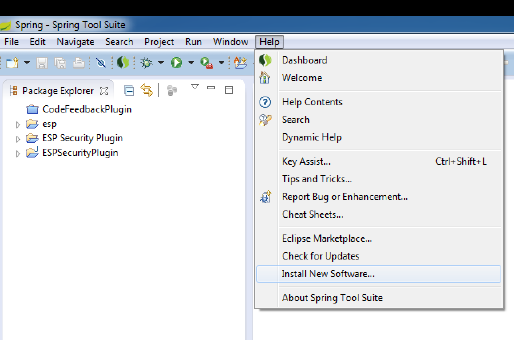
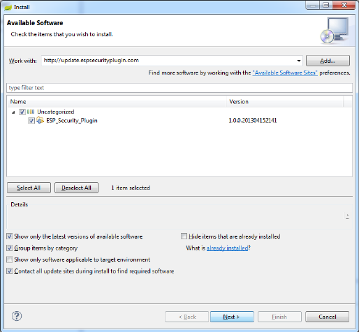
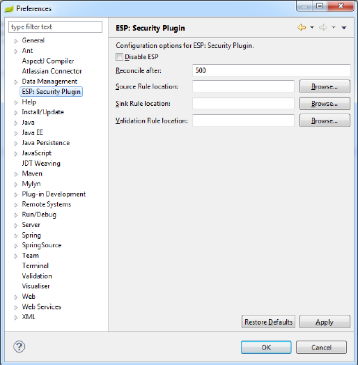
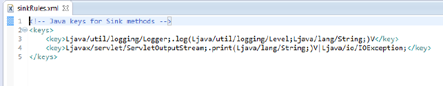
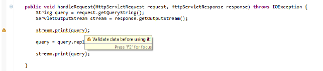

This project is no longer maintained. This website exists for historical reasons. The Eclipse update site no longer exists.
About | Installation |
Preferences | Usage
ESP: Security Plugin is a real-time static analysis utility for the Eclipse IDE.
This security tool searches code for any security vulnerabilities as they're
introduced, passively working in the background at times least disruptive to
developers to provide immediate feedback on the code being created. This immediate
feedback helps reinforce secure coding guidelines, offering a great companion
tool to secure coding awareness training, but also being effective in isolation.
ESP: Security Plugin is licensed under the MIT Open Source license. The code is available
on GitHub. Follow
me on twitter for updates: @hacors.
ESP: Security Plugin can be installed from within any Eclipse Indigo (3.7) and
above workspace. To install, simply navigate to the "Help -> Install New Software"
window as shown:

In the window that appears, enter "http://update.espsecurityplugin.com/", select
the plugin, and click 'Next'. Continue as normal for any other Eclipse extension.


'Time to Reconcile' is the time, in milliseconds, from when the user stops typing
until ESP: Security Plugin runs its analysis. This can be set to any number between
100 (0.1 seconds) and 5000 (5 seconds). Tweaking this number will affect the
responsiveness of the Eclipse workbench. The Rule Locations are additional rules
to define sources, sinks and validation nodes for ESP: Security Plugin. These are
XML files, containing the fully qualified name of a method.

While ESP: Security Plugin is being evaluated and tested, and while the rule
base grows, it may need to be disabled temporarily.
ESP: Security Plugin will begin to work automatically once it is installed.
When a Java file is opened and new code added, it shall automatically be scanned
for security issues.

Options for ESP: Security Plugin are available on the Preferences page, through
"Window -> Preferences".